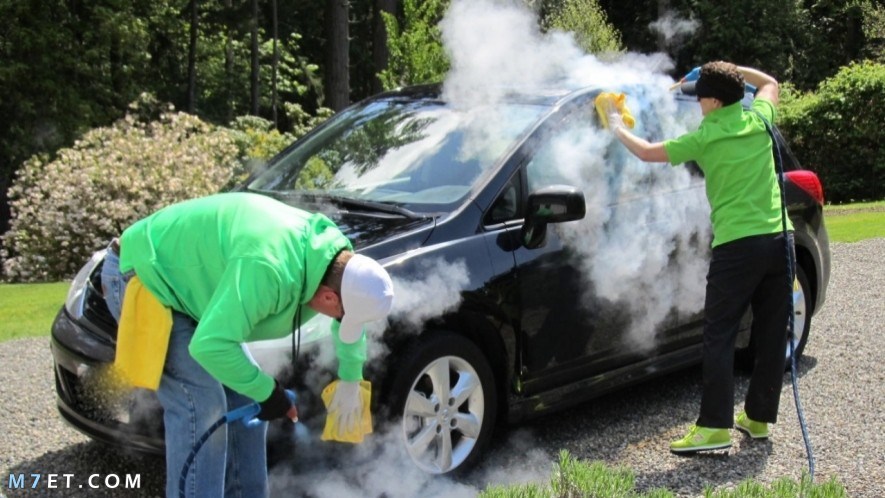
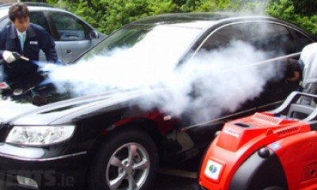
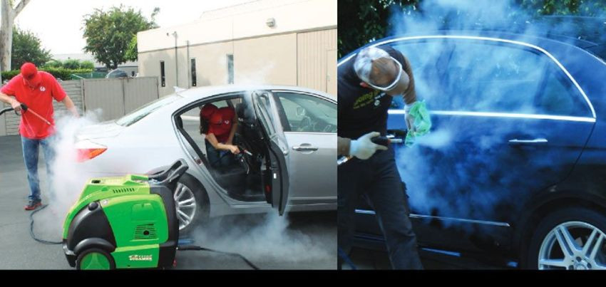
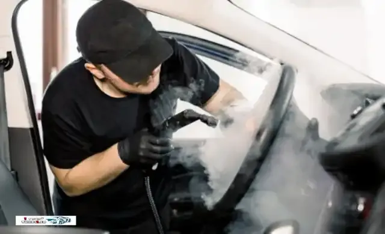
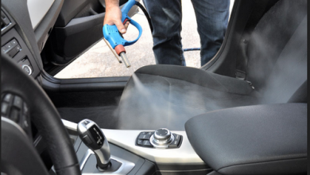
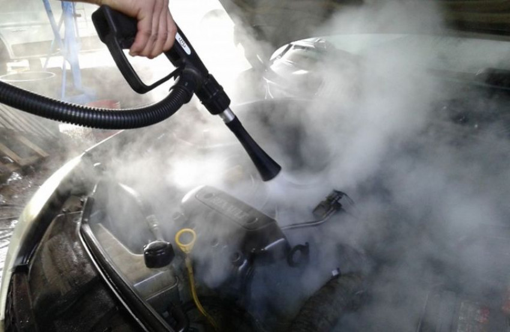
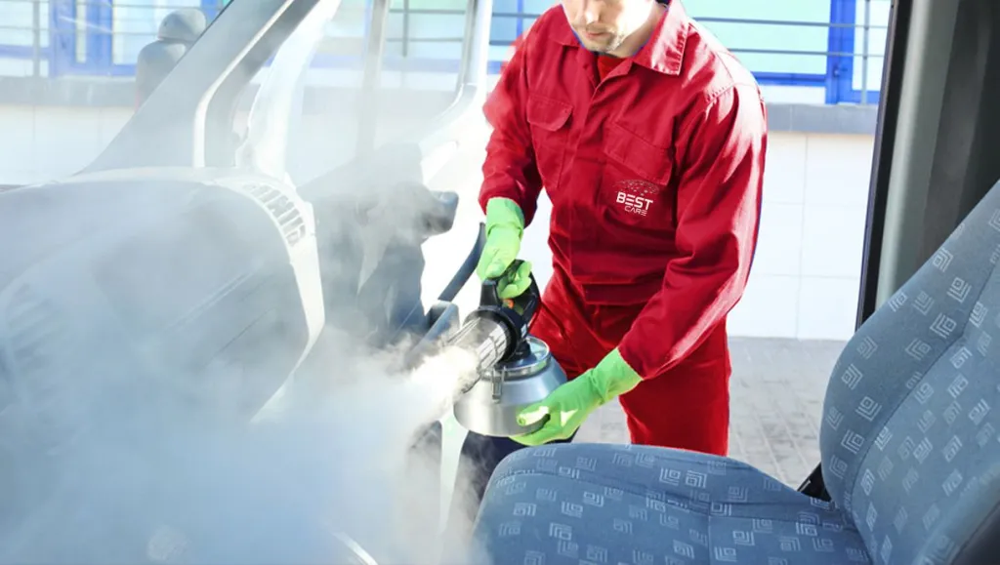
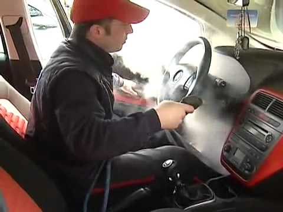

المصطفى
غسيل سيارات بالبخار

غسيل سيارات بالبخار شمال الرياض
لايوجد تنظيف عادى تنظيف السيارات بالبخار
وتنظيف المراتب والسقف والأرضيه غسيل سيارات متنقل
وتلميع الطبلون والديكور مع التعطير والتعقيم
وتنظيف فتحات المكيف تنظيف كامل السياره بالشنطه
غسيل سيارات بالبخار حطين
يؤكد الخبراء أن غسيل السيارات بالبخار يمتلك العديد من الفوائد بدايتها مع البيئة، حيث يعمل على توفير المياه اللازمة لغسيل السيارة، وتستهلك عملية غسيل السيارات بالبخار حوالي 3.7 لتر من الماء مقابل 200 لتر كمعدل بالنسبة لطريقة الغسل الكلاسيكية التي تعتمد على الماء.

غسيل سيارات بالبخار الياسمين
يؤكد الخبراء أن غسيل السيارات بالبخار يمتلك العديد من الفوائد بدايتها مع البيئة، حيث يعمل على توفير المياه اللازمة لغسيل السيارة، وتستهلك عملية غسيل السيارات بالبخار حوالي 3.7 لتر من الماء مقابل 200 لتر كمعدل بالنسبة لطريقة الغسل الكلاسيكية التي تعتمد على الماء.

غسيل سيارات بالبخار النسيم
يؤكد الخبراء أن غسيل السيارات بالبخار يمتلك العديد من الفوائد بدايتها مع البيئة، حيث يعمل على توفير المياه اللازمة لغسيل السيارة، وتستهلك عملية غسيل السيارات بالبخار حوالي 3.7 لتر من الماء مقابل 200 لتر كمعدل بالنسبة لطريقة الغسل الكلاسيكية التي تعتمد على الماء.

غسيل سيارات بالبخار الورود
يؤكد الخبراء أن غسيل السيارات بالبخار يمتلك العديد من الفوائد بدايتها مع البيئة، حيث يعمل على توفير المياه اللازمة لغسيل السيارة، وتستهلك عملية غسيل السيارات بالبخار حوالي 3.7 لتر من الماء مقابل 200 لتر كمعدل بالنسبة لطريقة الغسل الكلاسيكية التي تعتمد على الماء.

غسيل سيارات بالبخار الرياض
يؤكد الخبراء أن غسيل السيارات بالبخار يمتلك العديد من الفوائد بدايتها مع البيئة، حيث يعمل على توفير المياه اللازمة لغسيل السيارة، وتستهلك عملية غسيل السيارات بالبخار حوالي 3.7 لتر من الماء مقابل 200 لتر كمعدل بالنسبة لطريقة الغسل الكلاسيكية التي تعتمد على الماء.

غسيل سيارات بالبخار الملك عبدالله
يؤكد الخبراء أن غسيل السيارات بالبخار يمتلك العديد من الفوائد بدايتها مع البيئة، حيث يعمل على توفير المياه اللازمة لغسيل السيارة، وتستهلك عملية غسيل السيارات بالبخار حوالي 3.7 لتر من الماء مقابل 200 لتر كمعدل بالنسبة لطريقة الغسل الكلاسيكية التي تعتمد على الماء.

غسيل سيارات بالبخار الوزارات
يؤكد الخبراء أن غسيل السيارات بالبخار يمتلك العديد من الفوائد بدايتها مع البيئة، حيث يعمل على توفير المياه اللازمة لغسيل السيارة، وتستهلك عملية غسيل السيارات بالبخار حوالي 3.7 لتر من الماء مقابل 200 لتر كمعدل بالنسبة لطريقة الغسل الكلاسيكية التي تعتمد على الماء.

غسيل سيارات بالبخار الملز
يؤكد الخبراء أن غسيل السيارات بالبخار يمتلك العديد من الفوائد بدايتها مع البيئة، حيث يعمل على توفير المياه اللازمة لغسيل السيارة، وتستهلك عملية غسيل السيارات بالبخار حوالي 3.7 لتر من الماء مقابل 200 لتر كمعدل بالنسبة لطريقة الغسل الكلاسيكية التي تعتمد على الماء.